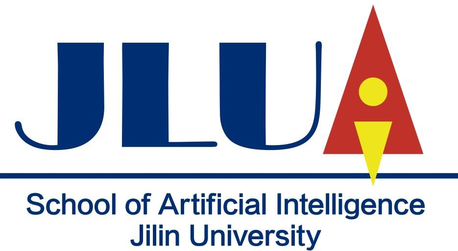

    <!--background color-->
    <script type="text/javascript">
        document.write ('<body style="background: Gainsboro; background-attachment: fixed;">')
    </script>

    <section id="conference" class="black-frame about about-container about-container-top">
      <h1>{{ page.title }}</h1>

      <div class="icon-about">
        
      </div>
      
      <p><br>
      
      &emsp;
      The School of Artificial Intelligence (SAI) of Jilin University was established on May 26, 2018. 
      It is a division of interdisciplinary research. Our mission is to push the frontier of AI research, 
      promote innovation with AI technologies, and cultivate engineering & research talents.
      As a newly built department, SAI offers undergraduate education in Artificial Intelligence, starting in 2020. 
      SAI is also authorized to grant master's and doctoral degrees in Computer Science, Control Theory, Control 
      Engineering, Mathematics, etc. in cooperation with College of Computer Science and Technology (CCST), College 
      of Communications Engineering (CCE), and School of Mathematics (SoM).
      <br><br>
      &emsp;

      SAI is also a pilot unit of Jilin University's tenure-track faculty employment system. We are actively hiring 
      top talents for multiple tenure-track faculty positions at all levels (Assistant Professor, Associate Professor, 
      Full Professor). We invite applications in all areas of Artificial Intelligence, including but not limited to the 
      following areas:  machine learning, computer vision, natural language processing, Knowledge Representation and 
      Reasoning, robotics, etc. Candidates must have a Ph.D. or its professional equivalent by the starting date of the 
      appointment.
      <br><br>
      &emsp;

      For scientific research, SAI has undertaken several national and provincial scientific research projects in Machine 
      Learning, Natural Language Processing, and Knowledge Graph; five of them were supported by the National Natural 
      Science Foundation of China (NSFC). Our total research funding exceeds 17.9 million CNY (which is about 2.5 million 
      US dollars). SAI also works closely with other institutions at Jilin University, mainly include the International 
      Center of Future Science and Key Laboratory of Symbolic Computation and Knowledge Engineering of Ministry of Education.
      <br><br>
      &emsp;
      
      In recent 2 years, we have published 24 academic papers in top-tier conferences (CCF-A/B) and journals (CAS-JCR 1/2, SCI-indexed). 
      These works were done in cooperation with top institutions from both academia and industry, including the University 
      of North Carolina, University of Georgia, Florida State University, Kyoto University, Swiss Federal Institute of 
      Technology in Lausanne (EPFL), Huawei Research, Microsoft Research, and so on.
      <br><br>
      &emsp;
      
      At present, we are building a comprehensive system with a strong academic 
      background, and looking for a new path of progression, thus we can make positive contributions to the country's 
      initiative in the new round of international technology competition. The School of Artificial Intelligence will 
      seize the historical opportunity, breakthrough AI core technologies, and finally, develop a competitive institute 
      in the future of Artificial Intelligence.
      <!-- In order to seize the opportunities of Artificial Intelligence (AI) development and to promote industrial 
      transformation and local economic development, Jilin University established the School of Artificial Intelligence 
      on May 26, 2018. The establishment of the School of Artificial Intelligence aims to implement the “New Generation 
      Artificial Intelligence Development Plan”, and “University Innovative Artificial Intelligence Plan”. Our mission is 
      to promote technological innovation in the field of AI, push the frontier of AI research, and cultivate engineering 
      & research talents for national AI strategy.
      <br><br>
      &emsp; -->

      <!-- &emsp; Professor Yi Chang, Dean of the School of Artificial Intelligence, Jilin University, is a Chinese National 
      Distinguished Professor in 2017, a British Computer Society (BCS) Fellow, an ACM Distinguished Scientist, and a 
      well-known scholar in the field of Artificial Intelligence. He was a research director of Yahoo Research, a Technical 
      Vice President of Huawei Research America. He has published more than 100 papers in top conferences or journals and 
      won the Best Paper Award on ACM KDD'2016 and ACM WSDM'2016. He served as one of the conference General Chairs for 
      ACM WSDM'2018, and he will serve as one of the conference General Chairs for ACM SIGIR'2020. <br><br> -->

      <!-- &emsp; The School of Artificial Intelligence will start with a high standard by integrating available resources. We will 
      not only collaborate with the existing AI-related academic and talent advantages of the university, but also explore 
      new modes of AI development in the new era. At present, we are building a comprehensive system with a strong academic 
      background, and looking for a new path of progression, thus we can make positive contributions to the country's 
      initiative in the new round of international technology competition. The School of Artificial Intelligence will 
      seize the historical opportunity, breakthrough AI core technologies, and finally, develop a competitive institute 
      in the future of Artificial Intelligence. <br><br>  -->
      </p>

      <h2 class="second">About JLU</h2>
      <p>
      &emsp;
      Jilin University (often abbreviated JLU) located in Changchun, founded in 1946, is a leading national research 
      university under the direct jurisdiction of China's Ministry of Education. It is a Chinese Ministry of Education 
      Class A Double First-Class University. It is strongly supported by state key projects such as Project 985, Project 211, 
      and Project 2011. Jilin University is also the university with the largest campus area and the largest number of 
      full-time students in China.
      <br><br>
      &emsp;

      As a comprehensive and national key university, JLU offers a variety of degree programs. It has 129 undergraduate programs, 
      304 Master's degree programs, 244 doctoral degree programs, and 42 centers for post-doctoral studies, 47 first-class 
      discipline construction projects. There are 73,702 full-time students, with 27,397 postgraduate students, 43,260 undergraduate 
      and college students, over 2,000 overseas students. Jilin University has established ties with more than 289 universities, 
      colleges, and research institutes in 39 countries/districts.
      <br><br>
      &emsp;

      Jilin University was also one of the earliest units that engaged in AI research in China. In 1977, Academician of Chinese 
      Academy of Sciences, Prof. Xiang-Hao Wang, took the leading role of artificial intelligence research in China. It has 
      been more than 40 years since Jilin University started systematical research in AI, that leaves this university a 
      strong foundation in research and education. As of today, the advantages of inter-disciplines are more prominent, 
      since Jilin University can actively expand the field of Artificial Intelligence with the solid base and rapid 
      development of computer science, mathematics, information engineering, control science, etc. <br><br>
      
      </p>
      <!-- <p>Jilin University, located in Changchun City, Jilin Province, was founded in 1946. It is a key comprehensive university under the direct jurisdiction of the Ministry of Education, and strongly supported by China’s “Project 211” and “Project 985”. In 2000, Jilin University merged with the former Jilin University of Technology, the former Norman Bethune University of Medical Sciences, the former Changchun University of Science and Technology and Changchun Institute of Posts and Telecommunications. In 2004, the former University of Military Logistics also joined. Jilin University offers a wide range of disciplines, including 43 colleges or schools, covering 13 academic categories, namely, philosophy, economics, law, education, literature, history, science, engineering, military science, medical studies, management, and art. There are 129 undergraduate programs, 304 accredited postgraduate programs, 244 accredited doctoral programs and 42 centers for post-doctoral studies, 47 first-class university and discipline construction projects.</p> -->

      <h2 class="third">Our Goal</h2>

      <p>Our ambitious goal is to build a world-level top AI research center.</p>

      <!-- <h2 class="second">Vision</h2>

      <p>Your Vision</p>
      
      <h2 class="first">Objectives</h2>

      <p>Your Objective</p>
    </section>

    <section id="fourth" class="black-frame about about-container">
      <h1>Title</h1>

      <p>More</p>
    </section>

    <section id="fifth" class="black-frame about about-container about-container-bottom">
      <h1>About</h1>

      <p>Info</p>
    </section> -->